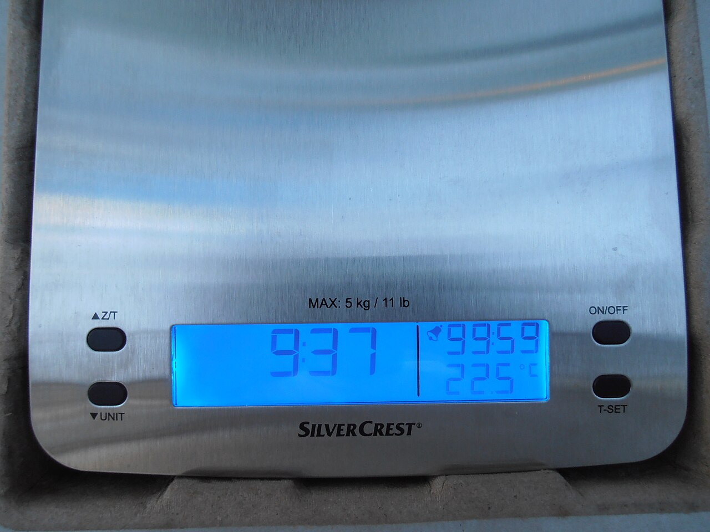
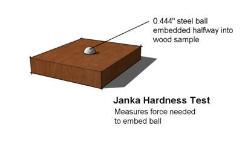
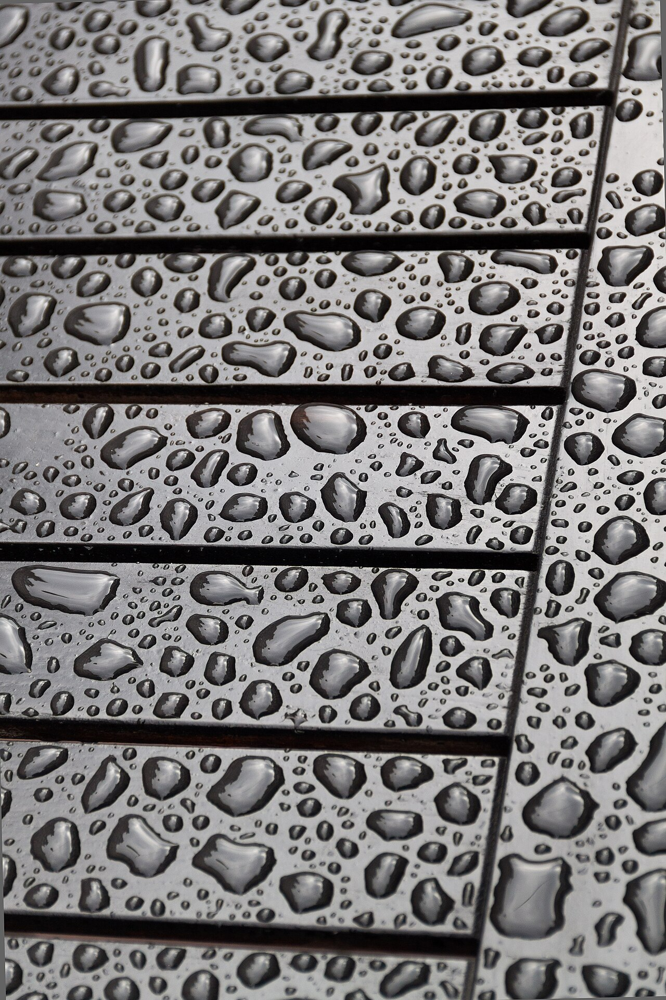
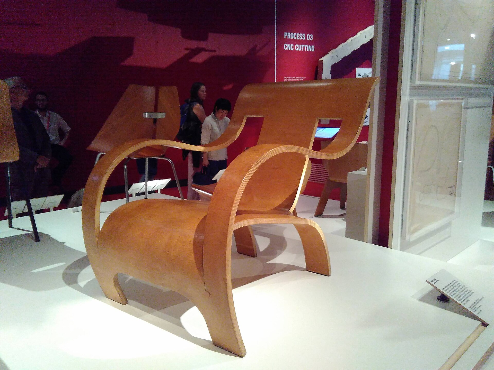
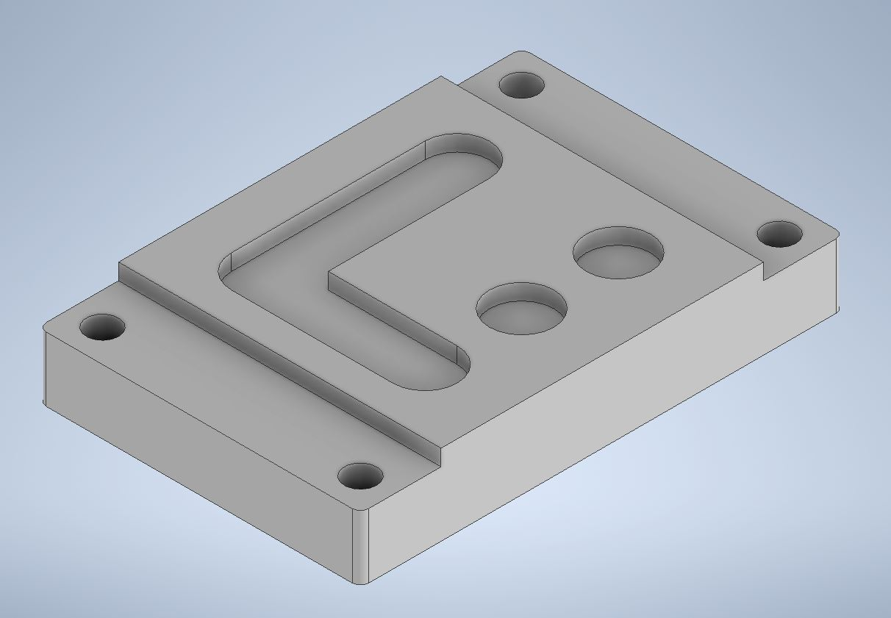
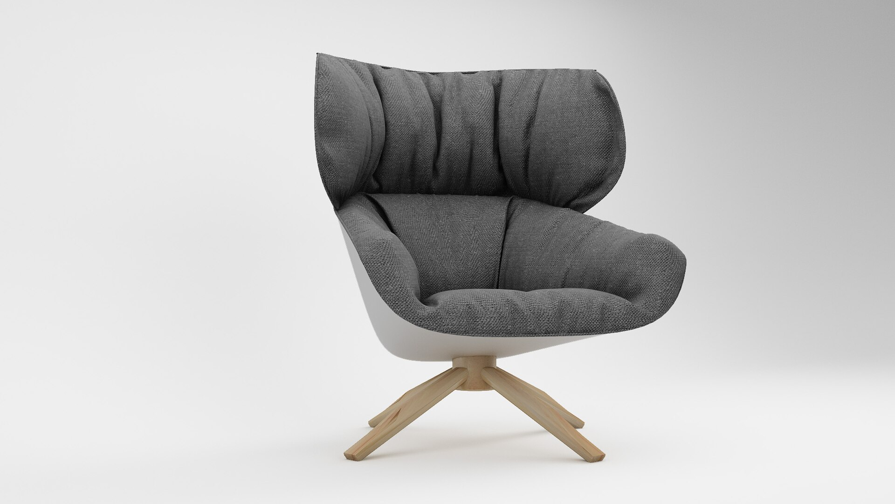

WP Technik 7 · Woche 3
Welches Holz passt zum Möbel? Holzeigenschaften prüfen · Nutzung begründen · Holztechnik kennenlernen
Lehrkraft: Drei gleich große, trockene Holzproben bereithalten. Noch keine Holzarten nennen.
Beobachten · noch nicht erklären
Drei Proben. Warum fühlen sie sich trotzdem verschieden an?
👀 „Ich sehe …“ · „Ich fühle …“ · „Mir fällt auf …“
Holzarten unterscheiden sich sichtbar – und in weiteren Eigenschaften.
Lehrkraft: Proben herumgeben und nacheinander wiegen lassen. Nur Beobachtungen sammeln.
Unser Denkweg
Vom Versuch zur Möbelentscheidung 🔬
→ 🧠
→ 🪑
Eine gute Begründung verbindet alle drei Schritte.
Lehrkraft: Beispiel modellieren: deutliche Spur → eher weich → für stark beanspruchte Tischplatte weniger günstig.
A5 · Prüflabor
Vier Blicke auf Holz Aussehen Farbe und Maserung prägen ein Möbel.

Masse Gleich große Proben können verschieden schwer sein.

Härte Eine Spur zeigt, wie leicht Holz eingedrückt wird.

Wasser Oberflächen nehmen Wasser unterschiedlich auf.
Lehrkraft: Nur Überblick geben. Die eigentliche Untersuchung folgt an den Stationen.
Eigenschaft 1 · Aussehen
Farbe und Maserung beeinflussen die Wirkung.
Ein Möbel soll auch gut aussehen. Holz kann hell, dunkel, rötlich, ruhig oder deutlich gemasert wirken.
ruhige Maserung zurückhaltende Fläche
deutliche Maserung sichtbare, lebendige Struktur
Lehrkraft: Wirkung ist nicht „richtig“ oder „falsch“. Sie muss zum Produkt und Kundenwunsch passen.
Eigenschaft 2 · Masse bei gleicher Größe
Schwerer bedeutet nicht automatisch härter. Bei gleicher Größe und ähnlicher Feuchte weist mehr Masse auf eine höhere Dichte hin.
🗄️ leichter günstig für bewegliche Möbelteile
🪑 schwerer kann die Standfestigkeit unterstützen
Lehrkraft: Gleiches Volumen und vergleichbare Feuchte als faire Bedingungen betonen.
Eigenschaft 3 · Härte
Wie schnell entsteht eine Spur? Eine tiefere Spur spricht in unserem Vergleich für weicheres Holz.
🪙 Gleiche Münze · ähnliche Kraft · vergleichbare Fläche · keine Messer
Für Tischplatten, Stühle und Arbeitsflächen ist eine widerstandsfähige Oberfläche oft wichtig.

Material und Konstruktion müssen Belastungen gemeinsam aushalten.
Lehrkraft: Härte und Dichte nicht gleichsetzen. Unser Versuch erlaubt nur einen Vergleich der Proben.
Eigenschaft 4 · Wasseraufnahme
Steht der Tropfen noch – oder zieht er ein?
Wasser verändert Holz. Bei Küchen- oder Badmöbeln müssen Holz, Konstruktion und Oberflächenschutz zusammenpassen.
💧 Fair prüfen: gleiche Fläche · gleicher Tropfen · gleiche Zeit: 60 Sekunden
Lehrkraft: Nicht pauschal „wasserfest“ sagen. Oberfläche, Faserrichtung und Behandlung beeinflussen das Ergebnis.
Entscheiden und begründen
Möbel-Challenge 🪑 Schulstuhl Welche Eigenschaft ist besonders wichtig?
Lösung zeigen Härte und Festigkeit: Sitz und Verbindungen werden oft belastet.
🚪 Große Schranktür Welche Eigenschaft kann die Nutzung erleichtern?
Lösung zeigen Geringe Masse: Das entlastet Beschläge und Nutzer.
🛁 Badregal Was muss besonders bedacht werden?
Lösung zeigen Feuchtigkeit: Material, Konstruktion und Schutz müssen passen.
Lehrkraft: Erst abstimmen lassen, dann Lösungen öffnen. Mehrere begründete Antworten können sinnvoll sein.
Beruf im Fokus
Holztechniker/in Planen · Prüfen · Steuern Möbel und Holzprodukte konstruieren Material und Fertigung auswählen Produktions- und Baupläne erstellen Qualität und Arbeitsabläufe überwachen technische Probleme im Team lösen Holztechniker/in ist in der Regel eine berufliche Weiterbildung.


Lehrkraft: Abgrenzen: nicht nur selbst fertigen, sondern Konstruktion, Fertigung und Qualität technisch planen und überwachen.
Eine berufliche Weiterbildung
Ein typischer Weg 1 Ausbildung in einem Beruf der Holzverarbeitung
→ 2 Berufspraxis Erfahrungen im passenden Beruf sammeln
→ 3 Fachschule Weiterbildung im Bereich Holztechnik
🧠 Wichtig: technisches Verständnis · genaues Arbeiten · Mathematik · räumliches Denken · Teamarbeit
Lehrkraft: Zugang und Dauer unterscheiden sich. Beispiel Fachschule Detmold: passende Ausbildung und Berufspraxis, danach Voll- oder Teilzeitweiterbildung.
Vom Input zur eigenen Untersuchung
Jetzt prüfst du selbst. Du sammelst Daten, damit du die Nutzung eines Holzes begründen kannst.
1 Lege A5.1 aus deiner Mappe bereit.
2 Öffne deine zugeteilte Prüfstation auf dem iPad.
3 Notiere Beobachtungen und Messwerte auf A5.1 .
📁 Die Website führt. Deine Mappe dokumentiert das Lernen.
Lehrkraft: Probensätze und Stationen zuteilen. Ergebnisse bleiben ausschließlich auf Papier.
Quellen und Bildlizenzen · Stand 27.09.2026
Nachweise Bundesagentur für Arbeit: BERUFENET, Techniker/in – Holztechnik. Fachschule für Holztechnik Detmold: Weiterbildung Holztechniker. „16 wood samples“, Anonimski, CC0, Wikimedia Commons. „Küchenwaage digital“, Sarang, gemeinfrei, Wikimedia Commons. „Janka hardness test“, Nasa-verve, CC BY 3.0, Wikimedia Commons. „Water drops on the table surface“, Ximeg, CC BY-SA 3.0, Wikimedia Commons. „Chair from wood veneer“, DeveshT, CC0, Wikimedia Commons. „CAD computer-aided design“, Toolpathsubmanu, CC BY-SA 4.0, Wikimedia Commons. „CNC machine“, Elma Verhouden, gemeinfrei, Wikimedia Commons. „Furniture 3D Design“, Sushmita Roy, CC BY-SA 4.0, Wikimedia Commons. Bilder wurden für die Präsentation verkleinert und teilweise beschnitten.
Lehrkraft: Diese Folie muss im Unterricht nicht gezeigt werden.